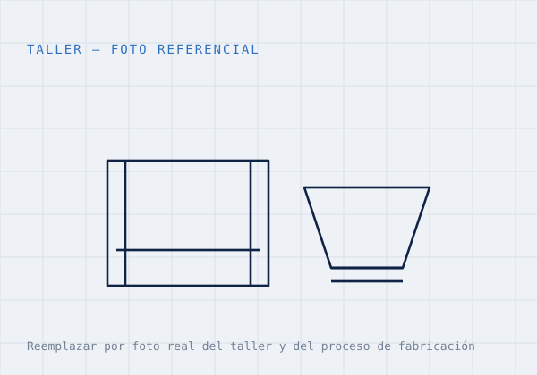
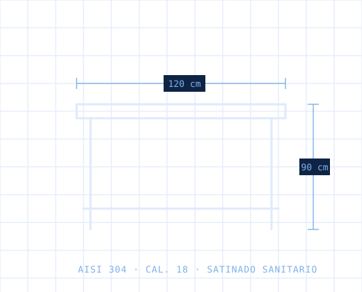

Quiénes somos
El corazón de tu cocina, fabricado en acero
En Industrias Céspedes fabricamos mesas, lavaderos, campanas, estanterías y mobiliario de acero inoxidable de uso alimentario para pollerías, cevicherías, panaderías, restaurantes y cocinas industriales de todo el Perú.
Trabajamos con acero AISI 304 para superficies en contacto con alimentos y AISI 430 para estructuras, con el calibre adecuado a cada uso. Cada producto está pensado para el trabajo diario intenso de una cocina peruana: higiene, resistencia y facilidad de limpieza.

Por qué confiar en nosotros
Nuestra propuesta de valor
Fabricación propia
Producimos en nuestro taller, con precio directo de fábrica y sin intermediarios.
Acero de uso alimentario
AISI 304 para contacto con alimentos y AISI 430 para estructuras, con el calibre que cada uso requiere.
Medidas personalizadas
Fabricamos según el espacio real de tu local, no al revés.
Asesoría directa
Te ayudamos por WhatsApp a elegir la solución correcta antes de comprar.
Boleta o factura (SUNAT)
Emitimos comprobante electrónico para que sustentes tu compra.
Garantía de fabricación
Respaldamos cada trabajo con garantía por defectos de fabricación.
Confianza
Trabajo que se ve y se sustenta
Mostramos nuestro taller, el proceso de fabricación y las entregas reales a clientes. Nuestra dirección, horarios, teléfono y WhatsApp están siempre visibles.
- Galería de proyectos instalados con su distrito o ciudad.
- Acero de uso alimentario y buenas prácticas de fabricación.
- Política de garantía por defectos de fabricación.

AISI 304 / 430